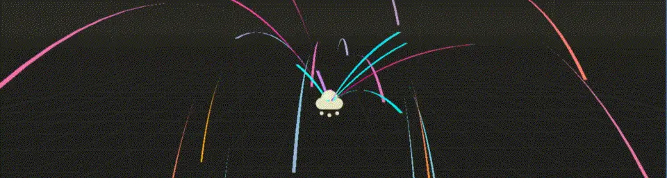
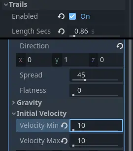
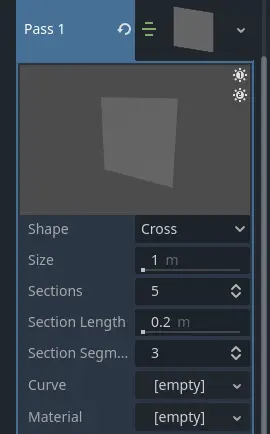
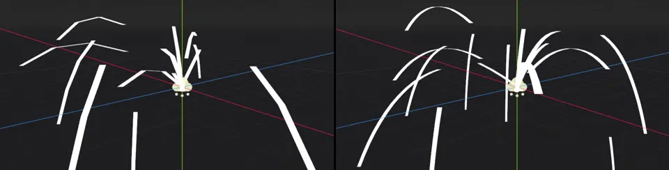
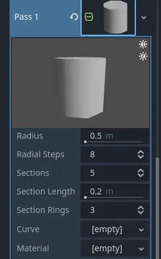

Vệt hạt 3D
Ghi chú
Vệt hạt chỉ được hỗ trợ trong các renderer Forward+ và Mobile, không hỗ trợ trong Compatibility.


Thiết lập vệt hạt
Godot cung cấp một số loại vệt mà bạn có thể thêm vào hệ thống hạt. Trước khi làm việc với vệt, bạn cần thiết lập một vài tham số. Tạo một hệ thống hạt mới và gán một process material như đã mô tả trước đó. Trong nhóm Trails của hệ thống hạt, đánh dấu ô bên cạnh Enabled và tăng thời lượng phát bằng cách đặt Lifetime thành khoảng 0.8. Trên process material, đặt Direction thành (X=0,Y=1.0,Z=0) và Initial Velocity thành 10.0 cho cả Min và Max.
Thứ duy nhất còn thiếu là một mesh cho draw pass. Loại mesh bạn đặt ở đây quyết định loại vệt hạt bạn sẽ nhận được.
Vệt dải ruy băng (ribbon)

Các tham số quan trọng của ribbon mesh
Loại vệt hạt đơn giản nhất là vệt ribbon. Đi tới phần Draw Passes và chọn New RibbonTrailMesh trong các tùy chọn của Pass 1. RibbonTrailMesh là một quad đơn giản được chia thành các đoạn, rồi được kéo giãn và lặp lại dọc theo các đoạn đó.
Gán một Standard Material mới cho thuộc tính Material và bật Use Particle Trails trong nhóm thuộc tính Transform. Lúc này các hạt sẽ được phát ra dưới dạng vệt.
Bạn có hai lựa chọn cho tham số Shape của ribbon mesh. Cross tạo hai quad vuông góc với nhau, khiến vệt hạt trông có chiều sâu ba chiều hơn một chút. Điều này chỉ thực sự hợp lý nếu bạn không vẽ vệt ở chế độ Particle Billboard, và nó hữu ích khi nhìn hạt từ nhiều góc khác nhau. Tùy chọn Flat giới hạn mesh ở một quad duy nhất và hoạt động tốt nhất với hạt billboard.
Tham số Size điều khiển độ rộng của vệt. Dùng nó để làm vệt rộng hơn hoặc hẹp hơn.
Sections, Section Length và Section Segments phối hợp với nhau để điều khiển độ mượt của vệt hạt. Khi vệt hạt không đi theo đường thẳng, càng có nhiều đoạn thì nó càng trông mượt khi uốn cong và xoáy. Section Length điều khiển độ dài của mỗi đoạn. Nhân giá trị này với số đoạn để biết tổng chiều dài của vệt.

3 đoạn, độ dài đoạn 1m (trái) so với 12 đoạn, độ dài đoạn 0.25m (phải). Hãy để ý rằng tổng chiều dài của vệt vẫn giữ nguyên.
Tham số Section Segments chia nhỏ thêm mỗi đoạn thành các phân đoạn. Tuy nhiên, nó không ảnh hưởng đến độ mượt của các đoạn trong vệt. Thay vào đó, nó điều khiển độ mượt của hình dạng tổng thể của vệt hạt. Thuộc tính Curve xác định hình dạng này. Nhấp vào ô bên cạnh Curve và gán hoặc tạo một đường cong mới. Vệt sẽ có hình dạng giống hệt đường cong, với giá trị của đường cong tại 0.0 ở đầu vệt và giá trị tại 1.0 ở đuôi vệt.

Vệt hạt được tạo hình bởi các đường cong khác nhau. Vệt di chuyển từ trái sang phải.
Tùy vào độ phức tạp của đường cong, hình dạng vệt hạt sẽ trông không mượt lắm khi số đoạn thấp. Đây là lúc thuộc tính Section Segments phát huy tác dụng. Tăng số phân đoạn sẽ thêm nhiều đỉnh hơn vào hai bên vệt để nó bám theo đường cong sát hơn.

Độ mượt hình dạng vệt hạt: 1 phân đoạn mỗi đoạn (trên), 12 phân đoạn mỗi đoạn (dưới)
Vệt dạng ống (tube)
Vệt tube có nhiều thuộc tính chung với vệt ribbon. Khác biệt lớn giữa chúng là vệt tube phát ra mesh hình trụ thay vì quad.

Vệt tube phát ra các hạt hình trụ
Để tạo vệt tube, đi tới phần Draw Passes và chọn New TubeTrailMesh trong các tùy chọn của Pass 1. TubeTrailMesh là một hình trụ được chia thành các đoạn, rồi được kéo giãn và lặp lại dọc theo các đoạn đó. Gán một Standard Material mới cho thuộc tính Material và bật Use Particle Trails trong nhóm thuộc tính Transform. Lúc này các hạt sẽ được phát ra dưới dạng những vệt dài hình trụ.

Các tham số quan trọng của tube mesh
Các thuộc tính Radius và Radial Steps đối với vệt tube cũng giống như Size đối với vệt ribbon. Radius xác định bán kính của ống và làm tăng hoặc giảm kích thước tổng thể của nó. Radial Steps điều khiển số cạnh quanh chu vi ống. Giá trị cao hơn sẽ tăng độ phân giải của nắp ống.
Sections và Section Length hoạt động giống nhau cho vệt tube và vệt ribbon. Chúng điều khiển độ mượt của vệt tube khi nó uốn cong và xoắn thay vì đi theo đường thẳng. Tăng số đoạn sẽ làm nó trông mượt hơn. Thay đổi thuộc tính Section Length để thay đổi độ dài mỗi đoạn và theo đó là tổng chiều dài của vệt. Section Rings là tương đương bên tube của thuộc tính Section Segments bên ribbon. Nó chia nhỏ các đoạn và thêm hình học cho ống để khớp tốt hơn với hình dạng tùy chỉnh được xác định trong thuộc tính Curve.
Bạn có thể tạo hình vệt tube bằng đường cong, giống như với vệt ribbon. Nhấp vào ô bên cạnh thuộc tính Curve và gán hoặc tạo một đường cong mới. Vệt sẽ có hình dạng giống đường cong, với giá trị của đường cong tại 0.0 ở đầu vệt và giá trị tại 1.0 ở đuôi vệt.

Vệt tube của hạt với hình dạng đường cong tùy chỉnh: 4 radial step, 3 đoạn, 1 section ring (trái), 12 radial step, 9 đoạn, 3 section ring (phải)
Một thuộc tính quan trọng bạn có thể muốn đặt là Transform Align trong nhóm Drawing của hệ thống hạt. Nếu để nguyên, các ống sẽ không giữ được thể tích; chúng bị dẹt lại khi di chuyển vì trục Y của chúng vẫn luôn hướng lên ngay cả khi đổi hướng. Điều này có thể gây ra nhiều lỗi kết xuất (artifact). Hãy đặt thuộc tính thành Y to Velocity để mỗi vệt hạt giữ trục Y căn theo hướng chuyển động của nó.

Vệt tube của hạt không căn chỉnh (trái) và có trục Y căn theo vận tốc (phải)